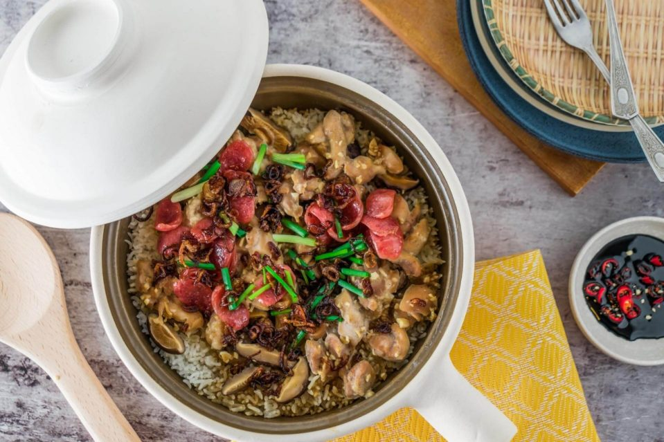

Chicken Thighs with Creamy Mustard Sauce
Published:3/23/22
Level:
Cooking Time:
Yield:
Easy
45 mins
4 - 5 servings

Ingredients
- 8 medium bone-in, skin-on chicken thighs (2 1/4 pounds)
- Kosher salt and freshly ground black pepper
- Good olive oil
- 2 cups halved and thinly sliced yellow onions (2 onions)
- 2 tablespoons dry white wine
- 8 ounces creme fraiche
- 1 tablespoon good Dijon mustard
- 1 teaspoon whole-grain mustard
- 1 tablespoon chopped fresh parsley